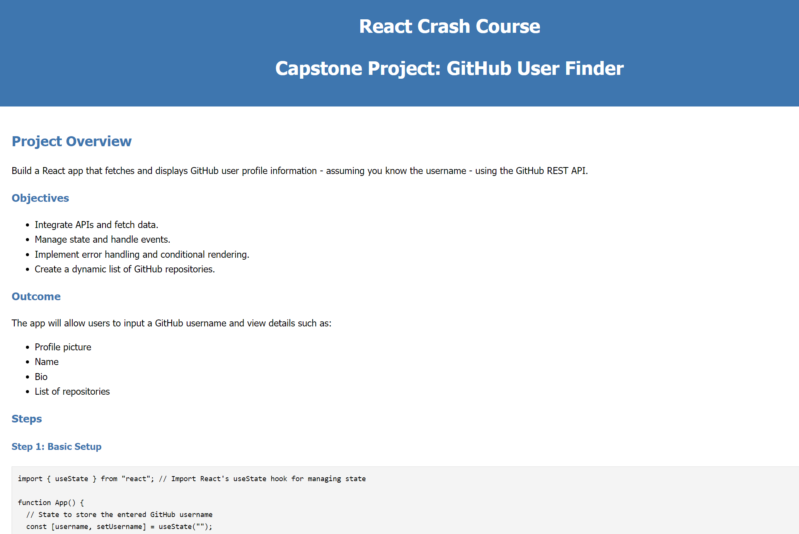
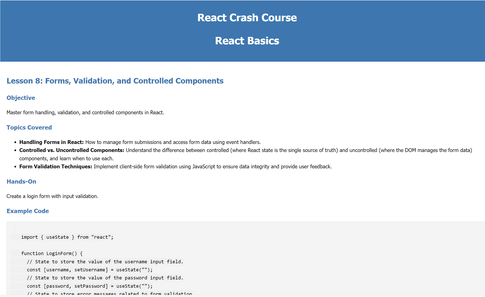
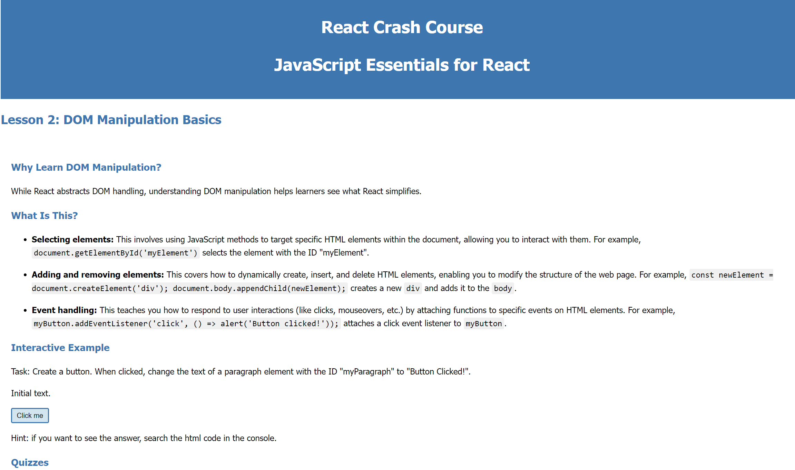
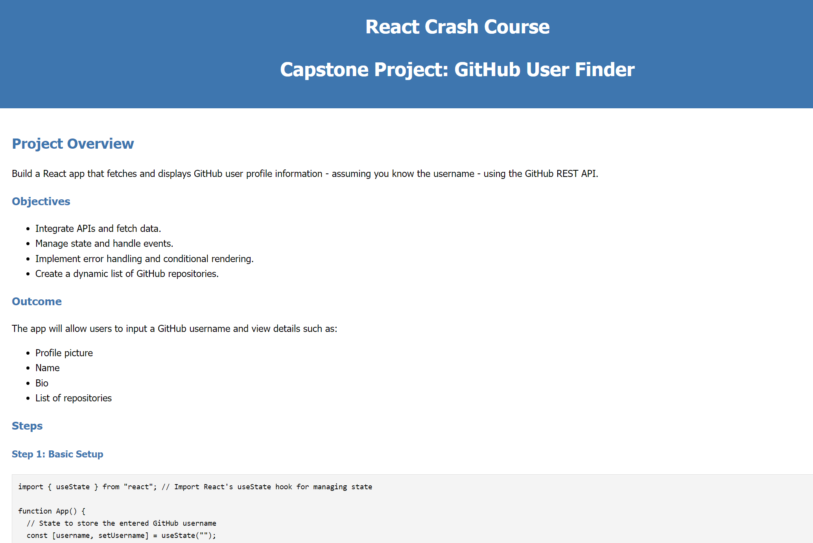
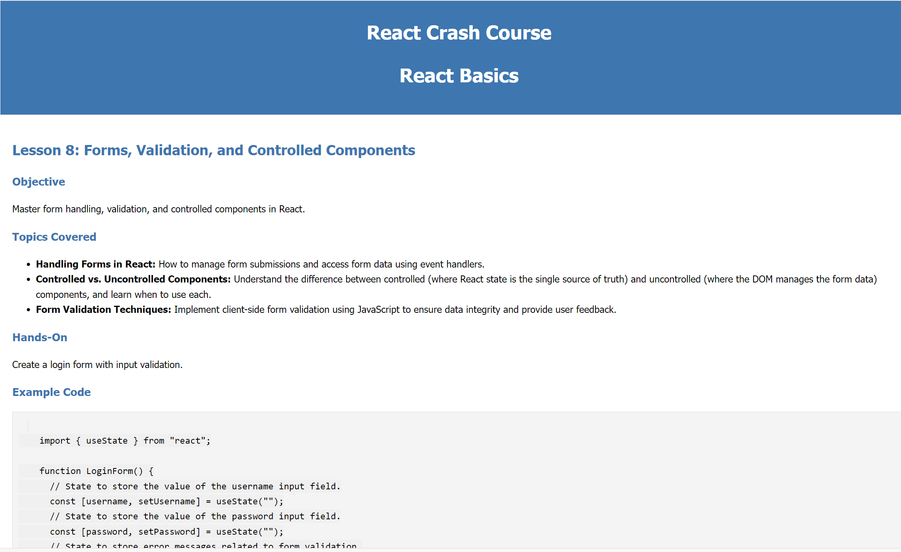
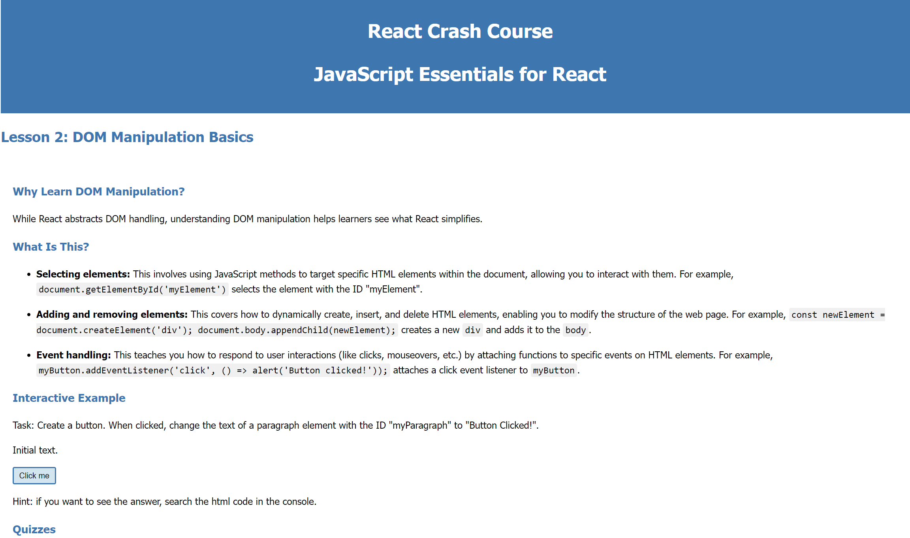

Cheat Sheets
React Crash Course
(December 2024)
Summary: This comprehensive React Crash Course provides a structured learning path for beginners to grasp the fundamentals of React development. Through self-paced interactive lessons and a hands-on capstone project (a GitHub User Finder app), learners gain practical experience with core concepts including JSX syntax, component creation, state management, event handling, conditional rendering, and API integration.
Problem: While the ITOL program introduced me to React, I felt the need for more in-depth practice and a structured approach to master its core concepts. The existing tutorials were often either too lengthy, outdated, or lacked a coherent, beginner-friendly learning path.
Solution: I developed a comprehensive React Crash Course designed for beginners with a basic understanding of JavaScript. The course features interactive lessons with clear explanations, well-commented sample code, code exercises, quizzes, and a hands-on capstone project (a GitHub User Finder app that integrates with the GitHub API) to solidify understanding and provide practical experience.
Impact: This project not only solidified my own understanding of React but also provided me with valuable experience in creating educational content and structuring a learning experience. The course now exists as a website and a GitHub repository, potentially benefiting other aspiring React developers.
GitHub repo: github.com/lzrdGreen/React-Crash-Course
Relevant skills: JavaScript, React, API Integration, DOM manipulation
 





Click on an image to enlarge it.
In spring 2024 (before joining the ITOL program), I developed a resource focused on intermediate Python concepts and best practices to deepen my knowledge in this area.
Practical Guide to Intermediate Python
(2024)
Intermediate Concepts and Best Practices in Python
Summary: This repository provides a collection of examples and explanations covering intermediate Python concepts and best practices, including object-oriented programming (OOP), lambda functions, generators, regular expressions, data structures from the collections module and beyond, and unit testing. It serves as a practical guide for developers looking to enhance their Python skills beyond the basics.
Problem: I undertook this project to create a curated collection of intermediate Python concepts and techniques that I frequently used or found valuable. My goal was to build a readily accessible reference for myself (and refine my own understanding as a byproduct) and potentially others who may need to consolidate these scattered pieces of knowledge into a single, cohesive resource.
Solution: To create this personal reference, I developed a GitHub repository containing well-commented code examples and explanations of key intermediate Python concepts. This included detailed sections on OOP (classes, inheritance, polymorphism), lambda functions, generators, regular expressions, decorators, various data structures (stacks, queues, graphs, trees), and unit testing. The repository is structured to provide clear examples and practical demonstrations of how these concepts can be applied.
Impact: This project successfully consolidated my understanding of intermediate Python concepts and created a readily accessible reference for my future projects. The process of organising and documenting these concepts also significantly deepened my understanding. The repository now serves as a valuable personal learning resource and may also be beneficial to other developers seeking practical examples and explanations of these topics.
GitHub repo: github.com/lzrdGreen/Intermediate-Concepts-in-Python
Relevant skills: Python, Unit Testing, Regular Expressions